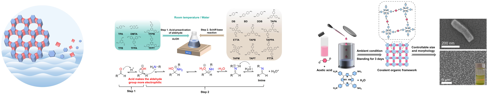
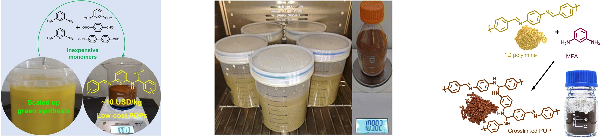
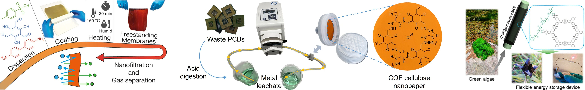
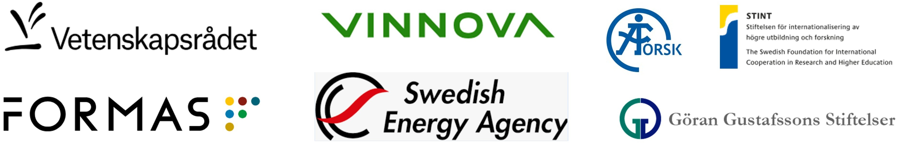

Our research focuses on the green synthesis and engineering of porous organic materials, including covalent organic frameworks (COFs), porous organic polymers (POPs), and metal–organic frameworks (MOFs) for energy and environmental applications.
We have developed an ambient aqueous synthesis strategy for various COFs, eliminating the need for conventional solvothermal conditions that rely on toxic organic solvents, high temperatures, and high pressures. This approach provides a sustainable and scalable route to functional COF materials.
Selected publications:

Porous organic materials such as COFs and POPs are typically synthesized from expensive organic monomers, which limits their large-scale and industrial deployment. We have developed imine- and aminal-linked POPs using cost-effective diamine and dialdehyde building blocks, including biomass-derived precursors, enabling significant cost reduction (down to ~10 USD per kg) and offering a viable pathway toward scalable production.
Selected publications:

Porous organic materials are typically obtained as insoluble and infusible powders, which severely limits their processability. We have developed nanoengineering strategies to transform MOFs, COFs, and POPs into freestanding membranes, monoliths, gels, and flexible nanopapers, thereby significantly facilitating their practical applications.
Selected publications:

Building on advances in green synthesis and nanoengineering, we have developed applications of porous organic materials in energy and environmental technologies, including carbon capture and conversion, noble metal recovery, nanofiltration, energy harvesting and storage, and gas sensing, aiming to contribute to a more sustainable future.
We gratefully acknowledge the Swedish Research Council, Formas, the Swedish Energy Agency, Vinnova, STINT, the Göran Gustafsson Foundation, and the ÅForsk Foundation for their financial support of our research activities.
